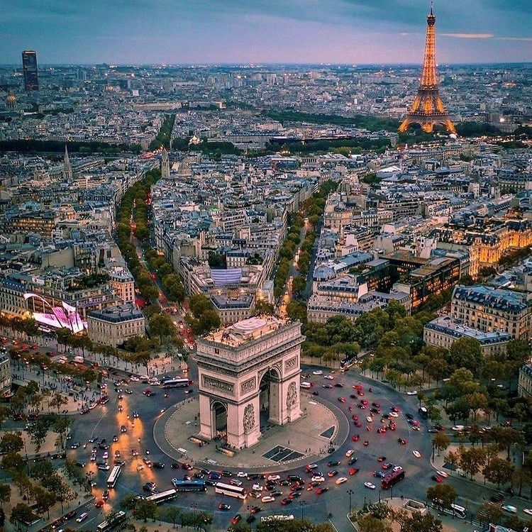

Francja
Francja to bardzo klimatyczne miejsce. Paryż zrobił na mnie duże wrażenie, zwłaszcza wieczorem, kiedy wszystko jest pięknie oświetlone. Poza tym jest tam mnóstwo kawiarenek, w których można usiąść i po prostu patrzeć na miasto. W innych częściach kraju też jest super, na przykład w Prowansji albo nad morzem. Jedzenie bardzo dobre, szczególnie sery i wypieki.
